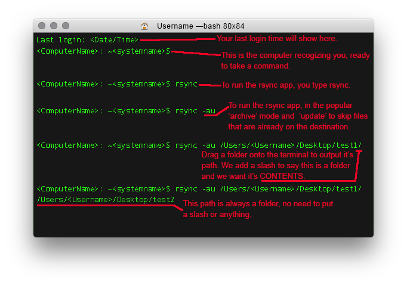

Shouldn't we all expect something more than terminal commands to gain useful features?
Rsync-GUI is a small front-end application that makes reducing copy times by using rsync a bit easier.
| Section 01: The original Rsync (terminal version) |
|---|
You should know what rsync is. It is the terminal command (mac/linux) that simply takes a command (rysnc and flags) along with two file paths and copies one into another.
One bit of awesomeness...Copy times are GREATLY reduced when rsync is set to include only the files that have changed, overwriting only what it needs to. This is done typically with the '-au flags'. In my opinion, this feature is sorely lacking in the finder itself. (Which, integrating an rsync copy into the Finder itself might be an interesting project for another time.) |
| Section 02: Enter Rsync-GUI |
|
A small app to make this operation easier. Just drag in two files and press sync (Cmd-Enter). The -au flag is added by default. The most often used options in rsync have control buttons and switches. That's it, that's all this app does. |
| Section 03: Preferences |
Position, size, colors & other default nicetiesIf you use rsync often, you might have it visible and you should be able to change the color and other basic features. To do so, just launch the preferences (Cmd-,) and make adjustments. Those preferences should persist whenever you launch the app. NOTE: With a small interface, color indicators are pushed off the picker interface. This is a known bug. However, the ability to pick a color is NOT affected. |
| Section 04: Copy folder contents |
The trickiness of coping folder contentsIf you use rsync often, you will get in the habit of putting a slash ('/') at the end of your first entry to indicate that you'd like to copy the folder contents (as opposed to the folder itself). If you don't check this, you'll likely run the risk of copying your source folder to the inside of your target destination folder. Rsync-GUI simplifies the task of inputting this setting for you with a handy radio button (whose setting is remembered). |
| Section 05: Minimized Interface |
Position, size, colors & other defaultsIf you use rsync often, you might want to keep it open and have it take up the least amout of real estate on your desktop as possible. To quickly toggle to a minimized version of the interface, use the 'Minimized Interface' command (Cmd+Shift+M). |
Rsync-GUI is free, I did it for fun.
{kind=link}